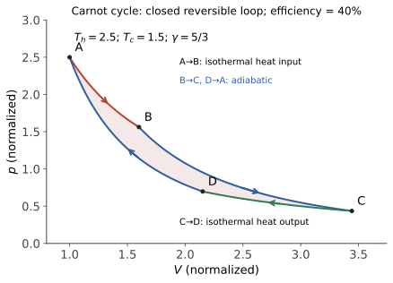

本页目录
统计物理 I · 热力学定律与熵
对标：Schroeder Thermal Physics §1–5 / Callen 精神 ｜ 前置：数分 V（多元微分——热力学是它的重度用户） 热力学是"不问微观、只靠几条定律"的唯象理论——在不知道原子存在的年代就已正确，且将在任何未来理论中存活（Einstein 语）。本页立起三定律与熵，重点是热力学的方法论：态函数 + 全微分 + Legendre 变换——数学工具你已全部备齐。
学习层：同一对端点，为什么热和功会换账？
1. 先预测：PV 图上哪些量是状态函数？
把一摩尔理想单原子气体无量纲化为 \(nR=1\)、初态 \((V_1,T_1)=(1,1)\)，比较终态 \((V_2,T_2)=(2,1)\) 的几条过程。全页采用
也就是膨胀时系统对外做功、系统的功账 \(\Delta W\) 为负。先回答：
- 改变中间路径但保持端点不变时，\(\Delta U\)、\(\Delta S\)、\(Q\)、\(\Delta W\) 中哪些必须相同，哪些可以改变？
- 可逆等温膨胀到 \(V_2=2\) 时，按本页符号约定 \(\Delta W\)、\(\Delta Q\)、\(\Delta U\) 的符号和数值关系是什么？
- 理想气体向真空自由膨胀到相同终态时，若 \(Q=\Delta W=0\)，熵变是否也必须为 \(0\)？这一步是否仍有一条平衡态 PV 曲线可供积分？
预测门故意把“曲线下的面积”与“过程可逆性”分开：平衡态路径可以用 \(p\,dV\) 积分，自由膨胀的非平衡阶段却不能把任意压力曲线当作状态方程。
2. 最小模型：先把四本账的角色写在标签上
在本实验的归一化单位中，\(pV=T\)，\(\gamma=5/3\)，\(C_V=1/(\gamma-1)=3/2\)。状态函数只看端点：
过程量沿路径累计：
后一个式子只是第一定律的重排，不是新的经验定律。对可逆路径，\(p_{\mathrm{ext}}=p\) 且 \(dS=\delta Q_{\mathrm{rev}}/T\)；对不可逆路径，系统熵仍是端点函数，但不能把实际 \(\delta Q/T\) 当作 \(dS\)。实验并排画等温、直线、两段可逆过程、绝热过程和自由膨胀边界，防止把“在 PV 平面上画出线”误读为“每一点都有平衡态”。
3. 动手：一个 PV 图，四种物理地位
揭示后可切换过程并拖动终体积。表格列出 \(\Delta W\)（系统功）、\(\Delta Q\)、\(\Delta U\)、\(\Delta S\)、环境熵和总熵产生；其中 \(\Delta U,\Delta S\) 标成 state，\(\Delta W,\Delta Q\) 标成 path。自由膨胀的虚线只表示初末平衡态之间的不可逆边界，不用于计算 \(\int p\,dV\)。
无 JavaScript 时的静态读法：取 \(V_2=2\)、\(\gamma=5/3\)，并坚持 \(dU=\delta Q+\delta W\)、\(\delta W=-p\,dV\)：
| 过程 | \(\Delta W\)（系统功） | \(\Delta Q\) | \(\Delta U\) | \(\Delta S\) | 总熵产生 |
|---|---|---|---|---|---|
| 可逆等温 | \(-\ln2\) | \(+\ln2\) | \(0\) | \(+\ln2\) | \(0\) |
| 可逆两段（先等容冷却，再等压膨胀） | \(-1/2\) | \(+1/2\) | \(0\) | \(+\ln2\) | \(0\) |
| 可逆直线路径 | \(-3/4\) | \(+3/4\) | \(0\) | \(+\ln2\) | \(0\) |
| 真空自由膨胀 | \(0\) | \(0\) | \(0\) | \(+\ln2\) | \(+\ln2\) |
| 可逆绝热（终温 \(2^{-2/3}\)） | \(\frac32(2^{-2/3}-1)\) | \(0\) | \(\frac32(2^{-2/3}-1)\) | \(0\) | \(0\) |
等温、两段和直线过程共享端点，故 \(\Delta U,\Delta S\) 相同，而功和热不同；自由膨胀的 \(Q\) 与系统功为零，却有 \(\Delta S=\ln2\)。绝热行的热量为零来自可逆绝热条件 \(pV^\gamma=\text{const}\)，不是所有“无热交换”的不可逆过程都自动满足同一条平衡曲线。
4. 定理假设与失败边界
- 第一律的符号在本页固定为 \(dU=\delta Q+\delta W\)、\(\delta W=-p_{\mathrm{ext}}dV\)。若改用“气体对外做功”为正的教材记号，应把功整体取负后再换算；不能在同一张表里混用两套约定。
- \(U(S,V,N)\)、\(H(S,p,N)=U+pV\)、\(F(T,V,N)=U-TS\)、\(G(T,p,N)=U-TS+pV\) 的极小判据各自绑定环境约束：在固定 \((S,V,N)\) 时 \(U\) 极小；在固定 \((S,p,N)\) 时 \(H\) 极小；在固定 \((T,V,N)\) 时 \(F\) 极小；在固定 \((T,p,N)\) 时 \(G\) 极小。对孤立系固定 \((U,V,N)\) 的等价表述是熵 \(S\) 极大，而不是把 \(U\) 在固定 \(U\) 下再说成“极小”。这些说法还默认稳定平衡、简单可压缩封闭系统和允许的约束没有遗漏。
- 可逆熵公式 \(dS=\delta Q_{\mathrm{rev}}/T\) 是用一条连接端点的可逆路径计算状态熵差；不可逆过程中应使用 Clausius 不等式和环境熵账，不能令 \(\delta Q_{\mathrm{actual}}/T=dS\)。自由膨胀的中间态非平衡，PV 虚线不是可积分的状态方程。
- 第三定律的 \(S\to0\) 需要唯一基态（或每粒子基态简并在热力学极限中不产生残余熵）。若基态有有限简并度 \(g_0>1\) 且低温仍能遍历这些基态，则 \(S(T\to0)\to k_B\ln g_0\)（宏观简并可按粒子数累加），这是残余熵边界；玻璃态、动力学冻结和未取极限的简并不能直接套用“可取零”的强表述。绝对零度不可由有限步骤达到与此低温极限是两条不同的陈述。
- PV 图和有限步长数值积分只给一个模型的有限证据；状态函数恒等式、可逆极限和熵增方向依赖上述方程状态、准静态/平衡和热库假设。
1. 第零与第一定律
第零定律：热平衡的传递性 ⇒ 存在温度函数（"可以定义温度计"的公理化表述）。
第一定律：\(dU = \delta Q + \delta W\)——能量守恒收编热现象。记号的深意：\(dU\) 是全微分（态函数：只看状态不看路径），\(\delta Q, \delta W\) 不是（过程量：路径依赖——数分 VI"什么样的微分式可积"的物理主场）。准静态 \(\delta W = -p\,dV\)。
理想气体的两条实验定律：\(pV = nRT\)；\(U = U(T)\)（Joule 自由膨胀）。配合第一定律立得 \(C_p - C_V = nR\)【推导一行】与绝热过程 \(pV^\gamma = \text{const}\)【推导：\(dU=\delta Q+\delta W=-p\,dV\)（\(Q=0\)）与 \(dU = C_VdT\) 联立分离变量】。
2. 第二定律与熵（本页心脏）

两种表述（Clausius：热不自发从冷到热；Kelvin：无法从单一热源取热全变功）——等价性【骨架：假设违反其一可构造违反另一的复合机】。
Carnot 定理【推导】：可逆机效率最高且只依赖两热源温度（反证：更高效机 + 逆行可逆机复合 = 违反 Clausius）；由此定义热力学温标，可逆机 \(\frac{Q_1}{T_1} + \frac{Q_2}{T_2} = 0\)（放热取负）。
Clausius 不等式与熵：任意循环 \(\oint\frac{\delta Q}{T} \leq 0\)（可逆取等）⇒ 可逆路径的 \(\int\frac{\delta Q}{T}\) 与路径无关——定义态函数熵：
（熵增原理：不可逆过程的判据与"时间之箭"的热力学表述。）基本方程（可逆平衡微分）：由本页约定 \(dU=\delta Q_{\mathrm{rev}}+\delta W_{\mathrm{rev}}=T\,dS-p\,dV\)——一切热力学关系的母式。
熵是什么，本页只说唯象半句："能量中不可用部分的度量 / 不可逆性的记账货币"；微观真相（\(S = k\ln\Omega\)——状态计数）留给 sm-02 揭晓——信息论的熵（你的信息论线）与这里的熵将在那页正式合体。
3. 热力学势与 Legendre 变换（方法论核心）
不同实验条件"顺手"的变量不同——用 Legendre 变换（cvx-01 / mech-03 后第三次上岗）换自然变量：
| 势 | 定义 | 自然变量 | 正确的平衡判据（固定环境约束） |
|---|---|---|---|
| 内能 \(U\) | — | \(S, V\) | 固定 \((S,V,N)\) 时 \(U\) 极小；等价地固定 \((U,V,N)\) 时 \(S\) 极大 |
| 焓 \(H\) | \(U + pV\) | \(S, p\) | 固定 \((S,p,N)\) 时 \(H\) 极小 |
| Helmholtz \(F\) | \(U - TS\) | \(T, V\) | 固定 \((T,V,N)\) 时 \(F\) 极小 |
| Gibbs \(G\) | \(U - TS + pV\) | \(T, p\) | 固定 \((T,p,N)\) 时 \(G\) 极小 |
Maxwell 关系：四个势的混合偏导相等（数分 V Clairaut 的第 N 次收租）给四条关系，如 \(\big(\frac{\partial S}{\partial V}\big)_T = \big(\frac{\partial p}{\partial T}\big)_V\)——把"难测量"（熵的导数）换成"易测量"（状态方程的导数）：热力学演算的日常主粮。
\(F\) 的深意（给 sm-02 铺路）："\(T\) 固定时 \(F = U - TS\) 极小" = 能量与熵的博弈——低温能量赢（有序）、高温熵赢（无序）：相变的总剧本（asm-01 的 Landau 理论就是给 \(F\) 建模）；ML 对账：变分自由能/ELBO 的命名正源于此（"energy - T×entropy"结构与 \(\log p \geq E_q[\log p] + H(q)\) 同构——comfy 课 02/信息论线的老朋友）。
4. 第三定律一嘴
\(T \to 0\) 时 \(S \to S_0\)；唯一基态时可取 \(S_0=0\)，基态简并度为 \(g_0>1\) 且可遍历时则有残余熵 \(S_0=k_B\ln g_0\)（宏观简并需按系统规模计数）。绝对零度不可通过有限步骤达到；对没有低温相变积聚、且热力学函数足够正则的稳定平衡体系，固定外参量的比热趋于零（经典均分定理在低温必然失败——qm/sm-03 量子统计的预告）。玻璃态的动力学冻结不等于已达到平衡基态，不能用它无条件推出同一结论。
5. 练习与要点
例 1（Carnot 数字） 电厂 \(T_1 = 800\) K、\(T_2 = 300\) K：\(\eta_{\max} = 1 - \frac{300}{800} = 62.5\%\)——实际 ~40%（不可逆损耗）。反向循环若作制冷机，\(\mathrm{COP}_{\rm ref}=\frac{T_2}{T_1-T_2}=0.6\)；若作热泵，\(\mathrm{COP}_{\rm hp}=\frac{T_1}{T_1-T_2}=1.6\)。两者只差输入功也最终进入热端这一份热量；温差较小时热泵 COP 可以远大于 1，这正是“搬热比直接造热便宜”的定量原因。
例 2（熵增计算） 1 kg 20°C 水与 1 kg 80°C 水混合：终温 50°C，\(\Delta S = mc\big[\ln\frac{323}{293} + \ln\frac{323}{353}\big] > 0\)（取 \(c\approx4.18\ \mathrm{kJ/(kg\,K)}\)，算出 \(\approx +36\) J/K）——温差消失的代价以熵记账；反向自发分离的概率在 sm-02 将量化为 \(e^{-\Delta S/k}\) 级的天文小数。
例 3（Maxwell 关系实战） 证明理想气体等温膨胀 \(\Delta S = nR\ln\frac{V_2}{V_1}\)：用 \(\big(\frac{\partial S}{\partial V}\big)_T = \big(\frac{\partial p}{\partial T}\big)_V = \frac{nR}{V}\) 积分——不测任何热量、纯状态方程推熵变：方法论的样板。\(\blacksquare\)
下一页：揭晓熵的微观身份——系综、配分函数与 \(S = k\ln\Omega\)：把热力学从"定律"降为"定理"。